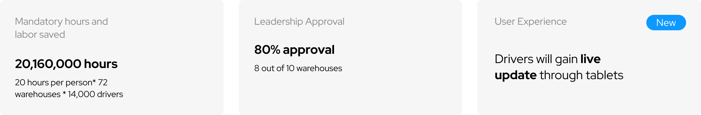
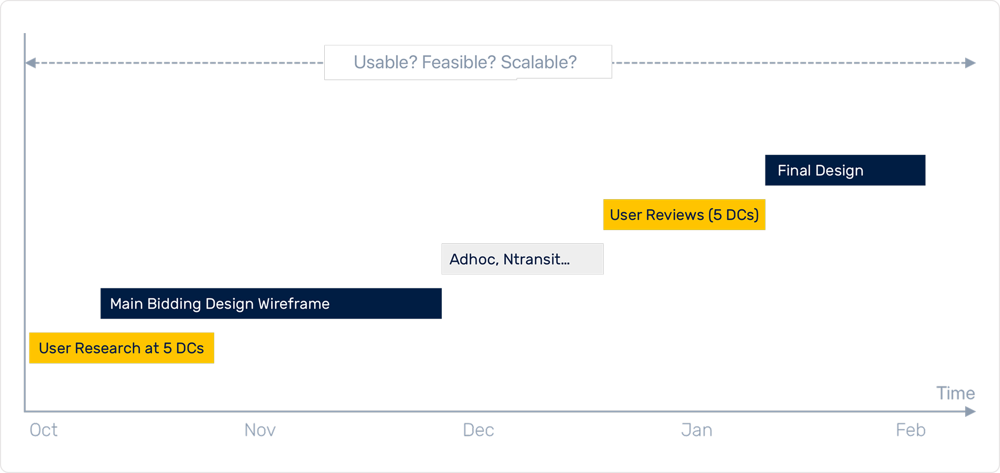
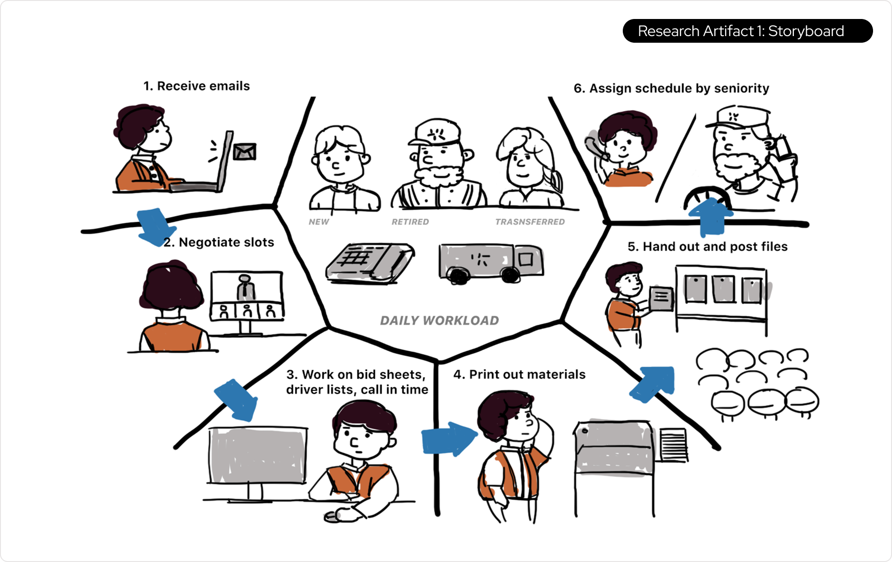
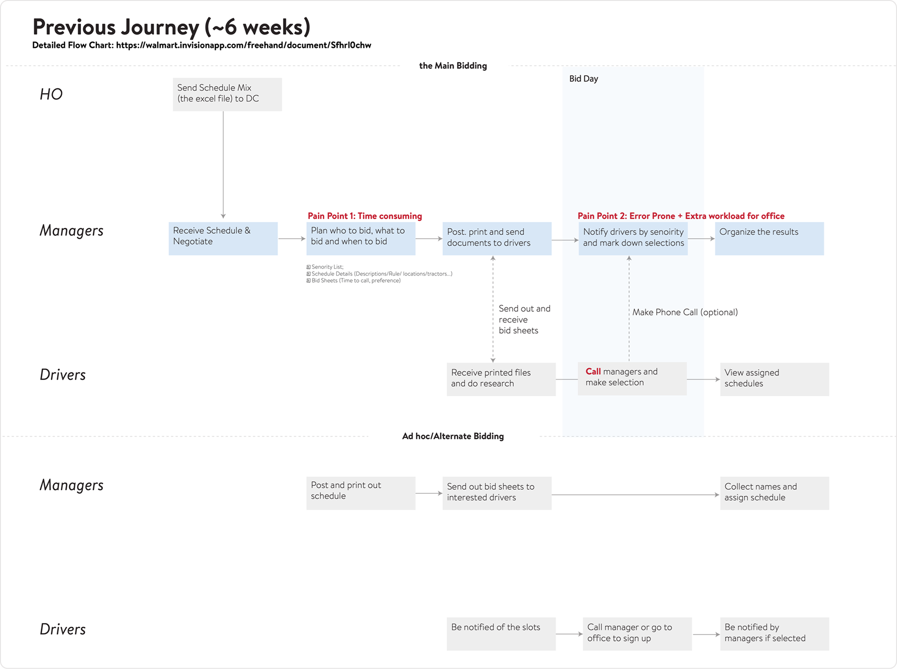
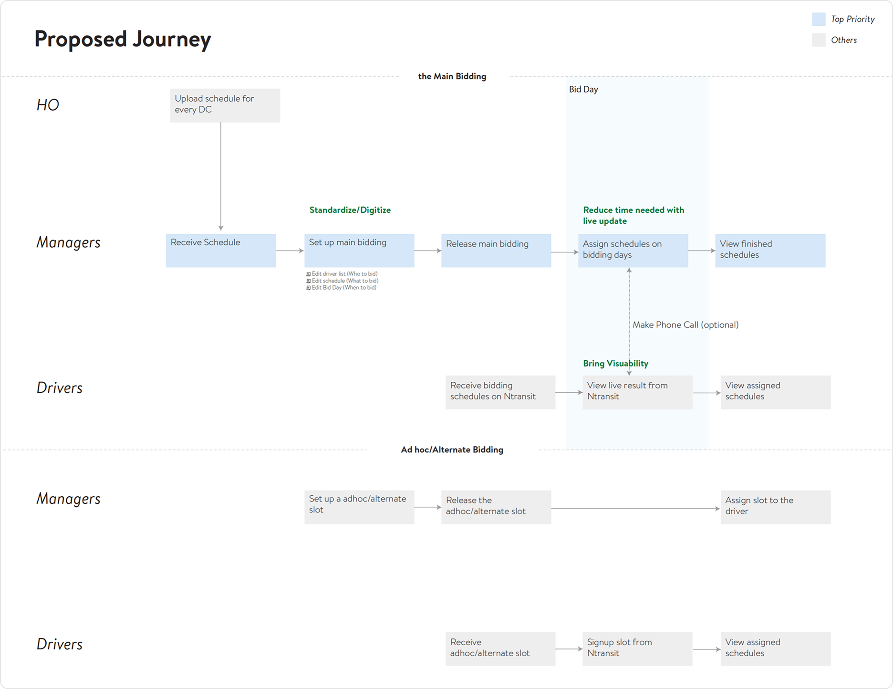
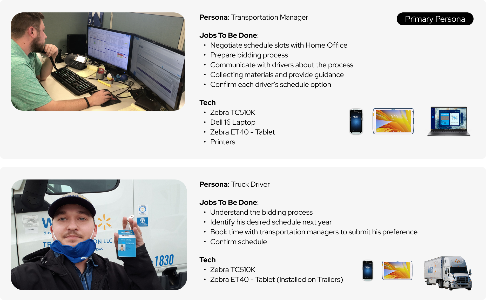
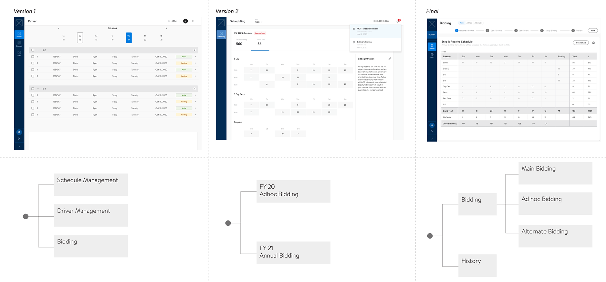
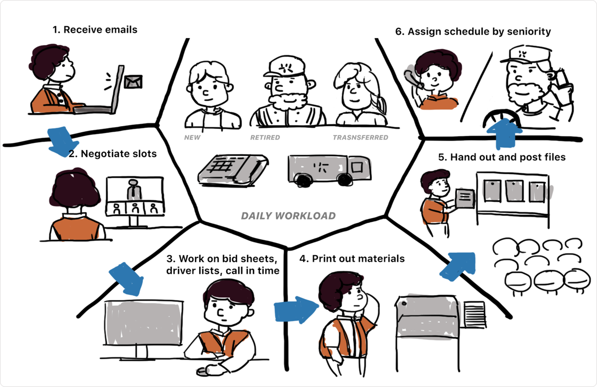
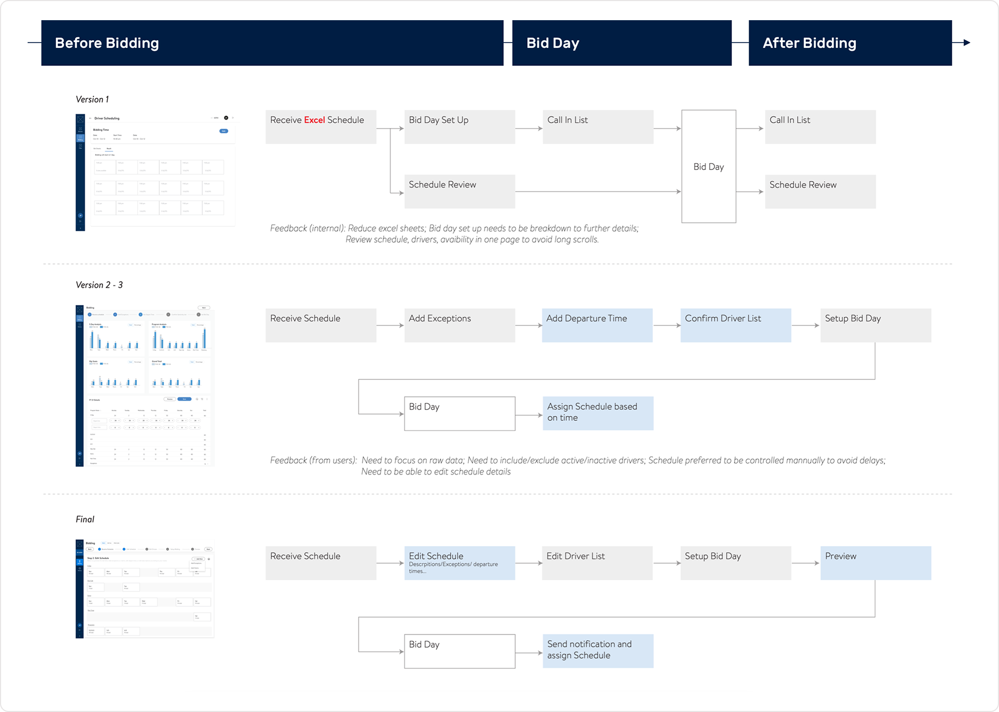

Scheduling
Won 80% warehouse leadership support to digitize an manual process
In 2022, I led research into transportation office bidding processes and drove the creation of a digital platform that automated a critical manual workflow. The solution was validated by five major transportation offices and gained strong endorsement from transportation management for launch.
What types of schedules are drivers bidding on?

The Experience
for Transportation Managers

The Experience
for Truck Drivers
Business Impact
Given the value of the MVP, the leadership gave green light for the product development and further iteration.
Timeline
I worked with my manager to establish a rough design timeline, dedicating the first three months to user research and capability development, followed by user testing of the prototype. The process emphasized usability, feasibility, and scalability.

Context research
I visited five transportation offices to speak directly with transportation managers and trailer drivers, gaining first-hand insight into how the bidding process operates at the warehouse level. While each office had its own nuances, the underlying workflow was consistent. Transportation managers are central to the process, translating annual business needs into bidding slots and coordinating assignments based on driver preferences. This highly manual process typically spans six weeks and requires involvement from nearly the entire transportation office.

A storyboard created based on interviews with 5 warehouses
A list of work schedules through researching with transportation managers
A list of work schedules through researching with transportation managers
Journey Mapping
To better demonstrate the value of the service, I crafted a journey-mapping comparison and walked the PM and design manager through the experiences of all stakeholders—from the Home Office to Transportation Managers and drivers. By streamlining and digitizing the workflow, the new process addressed two major pain points—time inefficiency and error-prone manual work—while reducing reliance on human labor through a standardized system.


Persona Prioritization
In terms of bidding, I considered a few pros and cons to decide who should be the main persona of this MVP. Transportation managers are generally more familiar with technology and are able to provide in-person recommendations to truck drivers. Since truck drivers are normally on the road, and tablets in the trucks are reported to have defects, home office generally has safety guidance to require minimal touch from truck drivers unless it is necessary. Therefore, the primary persona of this project is set to be transportation managers.

Capability Scoping
During low-fidelity prototyping, defining the right product scope emerged as a critical challenge. I explored two concept directions to understand the full range of user needs, including adjacent capabilities such as schedule management, driver management, and annual bidding. Through early concept reviews and cross-functional feedback, I learned that the first concept was over-scoped, as schedule and driver management were already addressed by existing internal platforms. The second concept, which centered on annual bidding, also fell short, as user research revealed that ad-hoc and annual bidding do not follow a linear or fixed sequence in practice.
Based on these insights, I reframed the product to focus exclusively on the bidding experience itself. By narrowing the scope, I designed a lightweight, purpose-built platform that better reflects real user workflows and increases the likelihood of long-term adoption.

Standardize the process
While designing the bidding workflow for the platform, I initially followed the end-to-end process outlined in the storyboard below. However, as I gathered user feedback, it became clear that transportation managers did not fully align on the initial flow when factoring in real-world business practices, frequency of use, and the intent behind each step. When the workflow included too many steps, users became disoriented and perceived the platform as overcomplicating an otherwise familiar process—particularly when certain steps represented minor or optional actions.
Despite variations across transportation offices, managers consistently expressed a need for a clear, well-defined progression with detailed explanations at each stage. Additionally, about 20% of offices had intentionally opted out of Step 6—calling drivers to assign schedules. In high-volume operations, managers instead assigned schedules directly based on worksheets submitted by drivers.
These insights drove a redesign of the workflow. I iterated on the process steps to reduce unnecessary complexity while accommodating different operational models, resulting in a more flexible bidding flow that supports the needs of transportation managers across warehouses.


Design the Step 1 - Receive Schedules
When designing the initial steps of the workflow that enable transportation managers to receive schedules from the Home Office, I prioritized surfacing the new-year schedules and automatically generating trend charts to address critical user questions: What is the new schedule, and what has changed? By making this information immediately visible, transportation managers gained clearer insight into upcoming changes and were better equipped to plan ahead and communicate effectively with their driver teams.
Design the Step 2 - Edit Schedule
Creating schedule guides is one of the most time-intensive responsibilities for transportation managers. They must manually translate complex scheduling sheets into clear, actionable guidance for drivers—defining recommended schedule types, available slots, key milestones, and submission instructions. Even with existing templates, this work often takes weeks and is vulnerable to inconsistencies and manual errors.
By digitizing this workflow, the platform automatically generates a centralized dashboard that turns a manual, fragmented process into a streamlined and standardized experience. Transportation managers can quickly input guidance through structured modals, reducing preparation time from weeks to days. The system also produces print-ready outputs, allowing managers to easily distribute clear, consistent schedules to drivers without the burden of creating lengthy documents from scratch.
Design the Step 3 - Edit Driver
Currently, transportation managers manually create documents to track driver participation and calculate seniority rankings. With frequent driver turnover from retirements, transfers, and departures, maintaining these records becomes a constant administrative burden that requires repeated rework.
The platform automates seniority ranking using backend data, allowing managers to update driver changes in seconds and instantly generate an accurate call-in order list. This reduces manual effort, shortens preparation time, and frees managers to focus on higher-value operational work.
Design the Step 4 - Setup Bid Day
After transportation managers finalize the driver list, they must assign call-in time slots to each driver and ensure those times are communicated accurately. This process also requires confirming each driver’s phone number to enable notifications. Without an easy-to-use system, managers rely on manual adjustments, making the workflow time-consuming and error-prone.
The platform streamlines this step by allowing managers to set the bid date and call-in window once, automatically generating an editable call-in list. This automation reduces manual coordination, ensures accurate communication, and gives managers flexibility to make last-minute adjustments with confidence.
Design the Step 5 - Bid Day Dashboard
On bid day, transportation managers must juggle multiple materials at once—the driver call-in list, the timetable, and each driver’s preference sheet. As they call drivers in real time, managers manually mark selections on paper, making the process cognitively heavy and highly prone to mistakes.
The platform replaces this fragmented workflow with a live dashboard that updates in real time as drivers are assigned to schedule slots. Managers can instantly see which slots are filled, what remains available, and who should be called next. This significantly reduces time spent cross-referencing materials, minimizes errors, and allows managers to run bid days with greater speed, clarity, and confidence.
New Capability - Tablet Live Update
Reflections from Yingxiao
I deeply enjoyed working on this project—from learning the intricacies of the truck driver bidding process to crafting an experience that meaningfully elevates it. Over the six-month journey, I gained firsthand insight into the challenges faced by frontline workers and saw how thoughtful, user-centered technology can simultaneously improve operational efficiency and employee satisfaction.
To discuss this case study with me, feel free to send an email to lunaatlgt@gmail.com